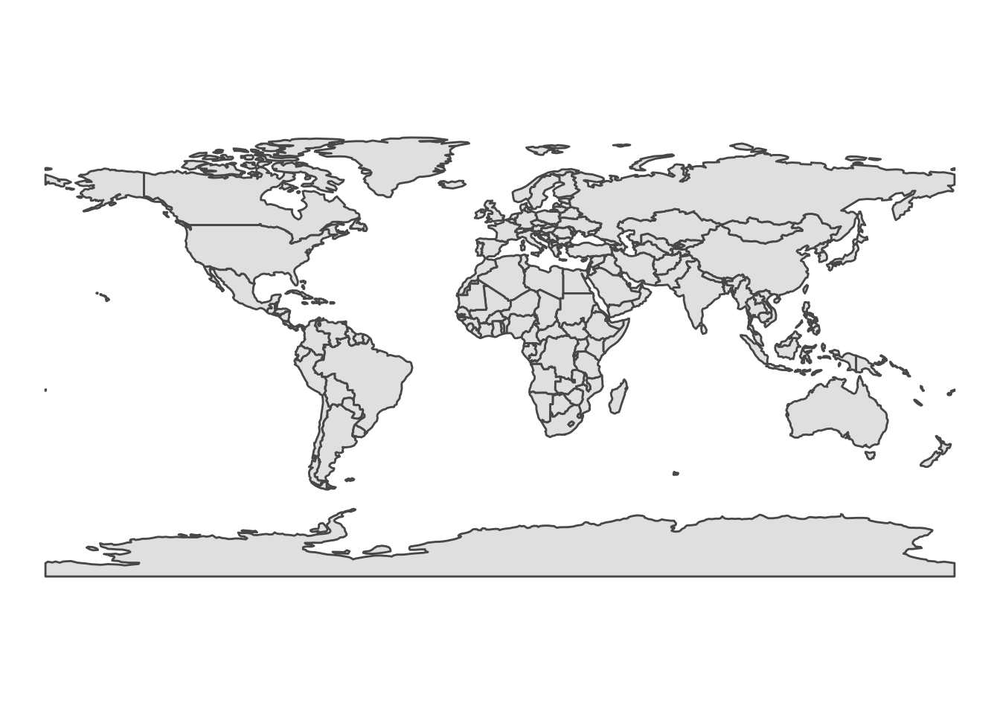

Chapter 16 Appendix C: sourcing geographical data for crime analysis
Throughout this book we provide example data sets and geometry files taken from various sources. Some, we get from data released with research papers, such as the NCOVR dataset on homicides in U.S. Counties. Some are administrative data, such as open crime data, which are linked with geometries from similarly available data provided on government or other institutional websites. In some cases we use APIs, for example to get data from Open Street Map, or from the Transport for London API, and in other cases we make use of resources made available for R such as the r package rnaturalearth which makes available boundaries from the natural earth project through installing the package.
As the kind of data, both attribute and geometry data, will vary from between each reader of this book, and even very for the same reader in different times, we cannot offer a definitive guide to sourcing the appropriate spatial data for your specific needs. However, we will instead show some examples of how we sourced our spatial data, in hopes that it might inspire and be useful to you in your mapping adventures.
Specifically we will highlight the following useful resources: getting UK boundary data from: - rnaturalearth - Open Street Map API - UK Data Service
16.1 The rnaturalearth package
The package rnaturalearth is an R package created by Andy South to hold and facilitate interaction with Natural Earth map data (South 2017). Natural Earth is a public domain map data set collected and maintained by the North American Cartographic Information Society. This data set contains both vector and raster data, which are available to download and use in your crime mapping endeavours. The package rnaturalearth allows us to access this database from within R, and to resturn the results as either sp or sf objects.
To do so, we need to install and load the package, and have a little understanding of the ways we can access and subset the data. We will give some small examples herem but recommend the documentation and vignettes available with the package for further detail.
So step one is to install the package if you have not yet done so, and then load it with the library() function:
library(rnaturalearth)Let’s start by plotting the outline of all the countries in the world. We can retrieve all countries in the data set with the ne.countries() function. Inside the function we specify the parameter returnclass = which allows us to choose whether we want a sf or sp object. Here let’s choose sf:
all_countries <- ne_countries(returnclass = "sf")If we wanted now to plot this, we can use any of the many methods covered in this book from plot() to ggplot() to tmap and so on.
library(ggplot2)
ggplot() +
geom_sf(data = all_countries) +
theme_void()
And here we see the boundaries for all the countries in the data set. How exciting! We can also have a look at the attribute data included by viewing the sf object with the View() function.
View(all_countries)You can see most of the information contained all relate to the ways to identify the different geometries, such as geounit or name or various codes. You can use these to filter, so that we only include certain countires we are interested in, or you can use this to join additional attribute data from elsewhere.
Let’s say we wanted to select only Uganda. we could subset from the all_countries object we called above:
library(dplyr)
uganda <- all_countries %>% filter(name == "Uganda")Or we could filter within the original call, which saves us having to download all the data in the first place:
uganda_2 <- ne_countries(country = 'Uganda', returnclass = "sf")You should be able to see the two results are the same.
u1 <- ggplot() + geom_sf(data = uganda) + theme_void()
u2 <- ggplot() + geom_sf(data = uganda_2) + theme_void()
gridExtra::grid.arrange(u1, u2, nrow = 1)
If we are focusing on one country, we might want to see some boundaries within said country. For this, we can use the function ne_states() when we request the file, and this will include boundaries.
uganda <- ne_states(country = "Uganda", returnclass = "sf")Now if we have a look we can see the different districts within Uganda have been also downloaded.
ggplot() + geom_sf(data = uganda) + theme_void()It is possible that sometimes this is not the ideal sub-geometry for you analysis, in which case you’ll have to go to other resources, but in some cases it might match up with your needs, in which case this will have been a very convenient way to be sourcing some geography data!
You can also change the scale of resolution at which you want to download your boundaries.
# small
uganda_1 <- ne_countries(country = "Uganda", returnclass = "sf", scale = 110)
# medium
uganda_2 <- ne_countries(country = "Uganda", returnclass = "sf", scale = 50)
# large
uganda_3 <- ne_countries(country = "Uganda", returnclass = "sf", scale = 10)
# plot them to compare
u1 <- ggplot() + geom_sf(data = uganda_1) + theme_void()
u2 <- ggplot() + geom_sf(data = uganda_2) + theme_void()
u3 <- ggplot() + geom_sf(data = uganda_3) + theme_void()
gridExtra::grid.arrange(u1, u2, u3, nrow = 1)
You can see as we move to lower numbers we get better resolution, which results in more detail around the border of the country (but also in larger file sizes!). It will be a decision for you to make what is relevant and appropriate for the specific map you are making.
A final note on rnaturalearth before we move on. With the ne_states() function, we specified which country we wanted with the country argument. This was OK for Uganda, but what if we wanted to plot something in France instead?
france <- ne_states(country = "France", returnclass = "sf")
ggplot() + geom_sf(data = france) + theme_void()
You see France appears, but so do the overseas territories of France, such as French Guiana, Guadeloupe, French Polynesia, and so on. It is possible you want to focus only on France. In this case, you can specfy, instead of country, the parameter geounit. Like so:
france <- ne_states(geounit = "France", returnclass = "sf")
ggplot() + geom_sf(data = france) + theme_void()Now we see only France. But what if you do want to include it all? Well in that case, one approach you might try is to add these territories in a way they appear closer to France, by inserting them by way of the inset map. We demonstrate how to add an inset map in Chapter 5.
16.3 Data from data repositories
There are many places where you can access data relevant to your particular area of interest. For example, in the United Kingdom, one such service is the UK Data Service. This is a research council funded comprehensive collection which includes includes major UK government-sponsored surveys, cross-national surveys, longitudinal studies, UK census data, international aggregate, business data, and qualitative data. A specific subset relevant to us is the Census Boundaries data set, which is accessible through the Census Support Boundary Datasets.
To access this resource, we visit https://borders.ukdataservice.ac.uk/, where we can access all Census geography products since 1971. On this page, there is a link to the UK Data Service Census Geography eLearning Modules which are a set of resources designed to make users more familiar with the data and services available. There are also tutorials for QGIS and Python users.
To acquire boundary data from here, we can select the Boundary Data Selector option. When you get to the link, you will see on the top there is some notification to help you with the boundary data selector. If in the future you are looking for UK boundary data and you are feeling unsure at any point, feel free to click on that note “How to use Boundary Data Selector” which will help to guide you.
For a quick example here, we can download some Local Authoriry boundaries for England. In this case that means, for Country select “England”, for Geography select “Administrative”, and for Dates let’s go for “2011 and later”. Then, hit the button which says “Find” and see some options appear in the Boundaries box below. From these, let’s select “English Districts, UAs and London Boroughs, 2011”:
Once you have the file, you could select sub-areas. For this, hit the “List Areas” button, and select those relevant to you. Otherwise, you can move to Extract Boundary Data, where you will be taken to the next page.
Here you will have a list of possible choices of what versions of the boundary files to download. At the time of writing these options are:
- English Districts, UAs and London Boroughs, 2011
- English Districts, UAs and London Boroughs, 2011, Clipped
- English Districts, UAs and London Boroughs, 2011, Generalised (simplified polygon geometry)
- English Districts, UAs and London Boroughs, 2011, Clipped and Generalised (simplified polygon geometry)
The choice here is similar to that of the scale argument in the ne_countries() function above when we were getting boundary data from the rnaturalearth package. The first option is not changed, and so is the most geographically accurate file, but also therefore the largest in file size (which will later affect computation speed). Then there are increasing steps of simplification applied. For those interested in the Generalisation and Clipping process see Service (2013). Generally, for crime mapping purposes, we tend to go with the last option, but it will depend on the unit of analysis at which your data are collected, and the kinds of analysis you will do whether precision of the borders is important or not in your specific case.
Once you have chosen which file to download, you can also choose the format. This is between the options of: CSV, KML, MapInfo, or Shapefile. We make use of the shapefile format in this book, it is a very commonly used format for those originally trained on propriatery GIS software such as ESRI Arc Suite, as both the authors of this book were. This is probably why we use it… On the other hand, KML files are neat, simple, and can easily be imported into R using the st_read() function from the sf package. Again, it is up to you which format to choose, what you are familiar with, and whether other co-authors or collaborators might be using other GIS software which supports some formats better than others. R is flexible, so you can be too.
Here, let’s download the KML format of the most simplified geometry. Once you select this download, it will save a .zip file to your computer. Make sure to put it in your working directory, and if you use subfolders, then the relevant subfolder. We have saved it to our “data” folder. We can extract (unzip) using R:
unzip('data/England_lad_2011_gen_clipped.zip', exdir = "data/England_lad_2011_gen_clipped")## Warning in unzip("data/
## England_lad_2011_gen_clipped.zip", exdir = "data/
## England_lad_2011_gen_clipped"): error 1 in extracting
## from zip fileNow you see (if you are following the same structure as we are) there is a new sub folder in the ‘data’ directory called ‘England_lad_2011_gen_clipped’ which contains the .kml file, and a TermsAndConditions.html file. This will contain information about how you can use this map. For example, all your maps will have to mention where you got all the data from. So since you got this boundary data from the UKDS, you will have to note the following:
“Contains National Statistics data © Crown copyright and database right [year] Contains OS data © Crown copyright [and database right] (year)”
You can read more about this in the terms and conditions document.
Now we can import our .kml file with st_read() from the sf package :
las <- st_read("data/England_lad_2011_gen_clipped/england_lad_2011_gen_clipped.kml")And plot it to see:
ggplot() + geom_sf(data = las) + theme_void()16.3.1 International resources
And here we have our English Local Authorities. Now we realise that this is useful mainly for our audiences based in the UK, but we include this illustration as other countries you similar data repositories where you can get the relevant census geographies. For example, the United States Census Bureau has census shapefiles for the United States (United States Census Bureau 2021), Census Canada for Canada (Statistics Canada 2021), the National Institute of Statistics and Geography (INEGI) for Mexico (INEGI 2021), and many more.
There are also resources which contain geography files for multiple countries. DIVA-GIS (Hijmans et al. 2021) is one such resource, which aims to collect free geographic data for any country in the world. They creators focus on studying the distribution of biodiversity, however these maps can be useful for the crime mapper as well. Another collection comes from MIT (2021) who collect links to various GIS resources. Finally, international organisations or organisations which focus on international data can also provide a good starting point for sourcing your geographic data. For example, the Centers for Disease Control and Prevention (CDC) have a list of shapefiles for many countries on their website(Centers for Disease Control and Prevention 2021). There are probably many more, and sometimes it is just a case of a thorough internet search to find the right geography for your data.
16.4 Open Street Map
Finally we want to mention the possibility of getting geographic data from Open Street Map. Open Street Map is a database of geospatial information built by a community of mappers, enthusiasts and members of the public, who contribute and maintain data about all sorts of environmental features, such as roads, green spaces, restaurants and railway stations, amongst many other things, all over the world (Open Street Map 2021a).
You can view the information contributed to Open Street Map using their online mapping platform (https://www.openstreetmap.org/). The result of people’s contributions is a database of spatial information rich in local knowledge which provides invaluable information about places and their features, without being subject to strict terms on usage.
Open Street Map data can be accessed using its API which stands for Application Programming Interface. An API can be understood as a tool which defines an interface for a programme to interact with a software component. For example, it defines the kind of requests or calls which can be made, and how these calls and requests can be carried out. Here, we are using the term ‘API’ to denote tools created by an open data provider to give access to different subsets of their content. Such APIs facilitate scripted and programmatic extraction of content, as permitted by the API provider (Olmedilla, Martı́nez-Torres, and Toral 2016). APIs can take many different forms and be of varying quality and usefulness (Foster et al. 2016). APIs may also have wrappers which refers to any interface which makes them easier to access. For example, Open Street Map has a graphical user interface called Overpass Turbo https://overpass-turbo.eu/, which allows users to build queries using any internet browser, and download and save the result.
Another wrapper comes in the form of an R package called osmdata. This package allows us to query the Open Street Map API and return the results of our query directly into R. We used this in Chapter 2 of this book, to query the location of pubs in Manchester. But we can also use this to source our boundary data as well.
Let’s begin by loading the library
library(osmdata)Our first task is to create a bounding box, so that we return only those data that fall within this box. Let’s continue to try and source data about Uganda, but let’s narrow in to the capital of Kampala. To get a bounding box the shape of Kampala, we can use thegetbb() function:
kampala_bb <- getbb("kampala", format_out = "sf_polygon")We should check on this object to make sure it looks the way we would expect:
ggplot() + geom_sf(data = kampala_bb) + theme_void()That’s looking Kampala-shaped to us, so we can continue. To query Open Street Map we have to build an Overpass Query, Overpass being the Open Street Map API. We can create this with the opq() function (which stands for Overpass Query - we assume…!) where we specify our bounding box object we created above. We can then pipe (%>%) our query elements to this. In the next step, we specify what features we want with the add_osm_feature() function. The parameters should define what we want, following the Overpass query language. We can look for things (nodes, ways, or relations if we’re being specific) using key value pairs. For example, to return all post boxes within an area, we need to use the amenity key and the post box value, or to find museum you would use the tourism key and the museum value. To learn more about this visit the OSM wiki Open Street Map (2021a).
To get administrative boundaries, we can use the key of admin_level, and for the value, we pass a number which can be any number between 2 and 10, where bigger numbers mean more granular resolution. For example admin_level = 2 is almost always a de-facto independent country, and admin_level=4 is usually equivalent to a “province”. However, numbers higher than 4 values vary in meaning between countries. You can look up the country specific levels on Open Street Map (2021b) . In Uganda, we can see that level 2 represents the borders of the 112 districts of Uganda, 4 the the boundary of counties, and level 8 the the boundary of sub-counties. Let’s use admin level 8 to map sub-counties in Kampala.
Finally, to make sure your query returns in sf format, append the osmdata_sf() to the end of the pipe.
kampala_boundaries <- opq(kampala_bb) %>%
add_osm_feature(key = "admin_level", value = "8") %>%
osmdata_sf() ## bb_poly has more than one polygon; the first will be selected.Now that we have the results, we can extract our boundary polygons, which are stored in the multiploygon object inside the query results. Let’s extract this now.
kampala_boundaries <- kampala_boundaries$osm_multipolygonsAnd now we can plot our results, labelling each region for clarity:
ggplot() + geom_sf(data = kampala_boundaries) +
geom_sf_label(data = kampala_boundaries, aes(label = name)) + theme_void()16.5 Summary and further reading
Here we demonstrated a few ways in which you can source geo-data for your crime mapping projects and endeavors. The amazing resource that is rnaturalearth will no doubt come in handy for all, so do read up on the documentation in South (2017). Administrative boundaries will also no doubt be more and more available from official government statistical resources, or collective initiatives like Hijmans et al. (2021) and others, many collected on the MIT (2021) resource. And of course, Open Street Map is a bottomless well of georeferenced information. Not only for boundaries, but roads, transport paths, and any feature which your heart may desire is probably available here. Mooney and Minghini (2017) and Kounadi (2009) are good resources to read up for those interested in making more use of Open Street Map data.